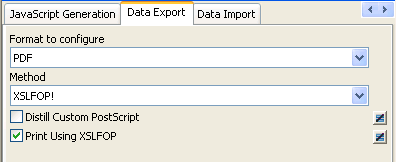
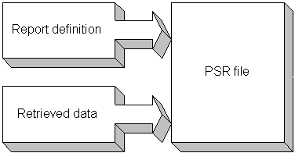

While previewing, you can save the data retrieved in an external file. Note that the data and headers (if specified) are saved. Information in the footer or summary bands is not saved unless you are saving as PDF or as a PSR file.
 To save the data in a DataWindow object in an external
file:
To save the data in a DataWindow object in an external
file:
Select File>Save Rows As from the menu bar.
The Save As dialog box displays.
Choose a format for the file from the Save As Type drop-down list.
If you want the column headers saved in the file, select a file format that includes headers (such as Excel With Headers). When you select a with headers format, the names of the database columns (not the column labels) are also saved in the file.
When you choose a format, PowerBuilder supplies the appropriate file extension.
For TEXT, CSV, SQL, HTML, and DIF formats, select an encoding for the file.
You can select ANSI/DBCS, Unicode LE (Little-Endian), Unicode BE (Big-Endian), or UTF8.
Name the file and click Save.
PowerBuilder saves all displayed rows in the file; all columns in the displayed rows are saved. Filtered rows are not saved.
The rest of this section provides more information about saving data in PDF, HTML, and Powersoft Report (PSR) formats.
For more information about saving data as XML, see Chapter 29, "Exporting and Importing XML Data."
PowerBuilder provides two ways to save a DataWindow object or DataStore in Portable Document Format (PDF).
By default, when you select File>Save Rows As and select PDF as the file type, the data is printed to a PostScript file and automatically distilled to PDF using Ghostscript. This option provides a robust solution that can save most types of DataWindow objects.
 Installing Ghostscript For licensing reasons, Ghostscript is not installed with PowerBuilder.
You (and your users) must download and install it before you can
use this technique. See "System requirements for
the distill method".
Installing Ghostscript For licensing reasons, Ghostscript is not installed with PowerBuilder.
You (and your users) must download and install it before you can
use this technique. See "System requirements for
the distill method".
Building on the ability to save data as XML, PowerBuilder can also save the DataWindow object's data and presentation to PDF by generating XSL Formatting Objects (XSL-FO). This option provides a platform-independent solution by rendering the DataWindow using a Java process rather than the Microsoft GDI. It also offers the possibility of customizing the PDF file at the XSL-FO stage. Saving as PDF using XSL-FO is particularly useful if you want to print DataWindow objects in EAServer on a UNIX operating system by using Java printing. The Ghostscript method is not supported on UNIX.
The XSL (Extensible Stylesheet Language) W3C Recommendation has two parts, XSLT and XSL-FO. XSLT provides the transformation typically used to present XML documents as HTML in a browser. XSL-FO provides extensive formatting capabilities that are not dependent on the output format.
For more information about XSL, see the latest version of the Extensible Stylesheet Language (XSL) .
The Ghostscript method currently does not support OLE and RichText DataWindow objects. The XSL-FO method currently does not support OLE, RichText, graph, and composite DataWindow objects.
If you want to save to PDF using the distill method, you do not need to change any properties. The distill method is used by default when you select Save Rows As from the File menu in the DataWindow painter and select PDF as the file type, or when you use the SaveAs method with PDF! as the file type.
PowerBuilder uses a PostScript printer driver specifically designed for distilling purposes to configure the PDF output. You can choose to use a different PostScript printer driver if you want to customize your PostScript settings for generating PDF.
To use a custom PostScript printer driver, you must set some properties.
 To save customized distilled PDF output in the DataWindow painter:
To save customized distilled PDF output in the DataWindow painter:
Select the Data Export tab in the Properties view for the DataWindow object.
Select PDF from the Format to Configure drop-down list, select Distill! from the Method drop-down list, and select the Distill Custom PostScript check box.
Select the Print Specifications tab and specify the name of the printer whose settings you want to use in the Printer Name box.
Save the DataWindow object, then select File>Save Rows As, select PDF as the Save As Type, specify a file name, and click Save.
The properties you set in the DataWindow painter are saved with the DataWindow object and are used by default when your application runs, but for more control, specify the properties in a script before saving the DataWindow object. To specify a custom printer driver in a script, set the Export.PDF.Distill.CustomPostScript property to Yes and specify a printer with the DataWindow.Printer property:
int li_ret
dw_1.Object.DataWindow.Export.PDF.Method = Distill!
dw_1.Object.DataWindow.Printer = "\\prntsrvr\pr-6"
dw_1.Object.DataWindow.Export.PDF. &
Distill.CustomPostScript="Yes"
li_ret = dw_1.SaveAs("custom.PDF", PDF!, true)
Users must have administrative privileges to create a PDF file.
To support saving as PDF using Ghostscript, you must download and install Ghostscript files on your system as described in the Installation Guide . The default PostScript printer driver and related files are installed in Sybase\Shared\PowerBuilder\drivers.
When you deploy applications that use the ability to save as PDF with the distill method, you must make sure your users have installed Ghostscript and have access to the drivers directory.
See the chapter on deployment in Application Techniques for more information about redistributing these files.
If you want to save to PDF using XSL-FO, you must set one or more properties before saving.
In the DataWindow painter, you set PDF export properties on the Data Export page in the Properties view.
 To save PDF output using XSL-FO in the DataWindow painter:
To save PDF output using XSL-FO in the DataWindow painter:
Select the Data Export tab in the Properties view for the DataWindow object.
Select PDF from the Format to Configure drop-down list and select XSLFOP! from the Method drop-down list.
(Optional) If you want simultaneously to send the output directly to a printer using the Java printing option of the Apache FOP processor, select the Print Using XSLFOP check box.

Save the DataWindow object, then select File>Save Rows As, select PDF as the Save As Type, specify a file name, and click Save.
PowerBuilder saves the data in the DataWindow object to the file you specified. If you selected the Print Using XSLFOP check box, it also sends the PDF file to the default printer for your system.
In a script, set the Export.PDF.Method property to XSLFOP! before saving the DataWindow object as PDF using the SaveAs method with the SaveAsType PDF!. To send the PDF file directly to the default printer, set the Export.PDF.XSLFOP.Print property to Yes before saving:
int li_ret
dw_1.Modify("Export.PDF.Method = XSLFOP! ")
dw_1.Modify("Export.PDF.xslfop.print='Yes'")
li_ret = dw_1.SaveAs("printed.pdf", PDF!, true)
You can also save a DataWindow object as XSL-FO, then use the processor of your choice to convert the XSL-FO string to the format you want, applying your own customizations to the conversion. Processors such as the Apache XSL Formatting Objects processor (FOP) can convert XSL-FO documents into several output formats including PDF, PCL, and AWT.
In the DataWindow painter, select File>Save Rows As and select XSL-FO as the file type. In a script, you can use the SaveAs method with the SaveAsType XSLFO!.
For a DataWindow named dwemp, the following command lines show the FOP syntax for producing a PDF, a print preview rendered on screen (-awt), and printable output rendered and sent to a printer (-print):
Fop dwemp.fo dwemp.pdf
Fop dwemp.fo -awt
Fop dwemp.fo -print
For more information about using FOP, see the FOP page of the Apache XML Project Web site .
The Apache XSL Formatting Objects processor (FOP) and JDK 1.4 are installed with PowerBuilder to support saving as XSL-FO, saving as PDF using XSL-FO, and Java printing. FOP is installed in Sybase\Shared\PowerBuilder\fop-0.20.4. JDK 1.4 is installed in Sybase\Shared\PowerBuilder\jdk14.
When you deploy applications that use XSL-FO or Java printing, you must deploy the fop-0.20.4 directory and the Java Runtime Environment (the JRE is available in a subdirectory of jdk14) with your application. These directories must be deployed in the same directory as the PowerBuilder runtime files. For more information, see the chapter on deploying your applications in Application Techniques.
On Windows DBCS platforms, you also need to install a file that supports DBCS characters to the Windows font directory, for example, C:\WINNT\fonts. To use these fonts, the userconfig.xml file in the directory Shared\PowerBuilder\fop-0.20.4\conf must be modified to give the full path name of the files you use, for example:
<font metrics-file="C:\Program%20Files\Sybase\Shared\
PowerBuilder\fop-0.20.4\conf\cyberbit.xml"
kerning="yes"embed-file="C:\WINNT\Fonts\Cyberbit.ttf">
For more information about configuring fonts, see the Apache Web site .
HTML Table format is one of the formats in which you can choose to save data. When you save in HTML Table format, PowerBuilder saves a style sheet along with the data. If you use this format, you can open the saved file in a browser such as Internet Explorer or Netscape. Once you have the file in HTML Table format, you can continue to enhance the file in HTML.
Some presentation styles translate better into HTML than others. The Tabular, Group, Freeform, Crosstab, and Grid presentation styles produce good results. The Composite, RichText, OLE 2.0, and Graph presentation styles and nested reports produce HTML tables based on the result set (data) only and not on the presentation style. DataWindows with overlapping controls in them might not produce the results you want.
 To save a report as an HTML table:
To save a report as an HTML table:
Open a DataWindow object.
Open the Preview view if it is not already open.
Select File>Save Rows As from the menu bar.
Choose the HTML Table format for the file from the Save As Type drop-down list.
Name the file.
PowerBuilder creates a file using the name you supplied and the extension htm.
Open a browser such as Netscape or Internet Explorer.
Use the browser's file open command to open the HTML file.
For more information about working with DataWindow objects and HTML, see the DataWindow Programmer's Guide .
A PSR file is a special file with the extension PSR created by PowerBuilder, InfoMaker, or DataWindow Designer. PSR stands for Powersoft report.
 Windows and PSR files When PowerBuilder is installed, the PSR file type is registered
with Windows.
Windows and PSR files When PowerBuilder is installed, the PSR file type is registered
with Windows.
A PSR file contains a report definition (source and object) as well as the data contained in the report when the PSR file was created.

 About reports A report is the same as a nonupdatable DataWindow object. For
more information, see "Reports versus DataWindow
objects".
About reports A report is the same as a nonupdatable DataWindow object. For
more information, see "Reports versus DataWindow
objects".
You can use a PSR file to save a complete report (report design and data). This can be especially important if you need to keep a snapshot of data taken against a database that changes frequently.
PowerBuilder creates a PSR file when you save data in the Powersoft report file format. See "Saving data in an external file". PSR files are used primarily by InfoMaker, a reporting tool. When an InfoMaker user opens a PSR file, InfoMaker displays the report in the Report painter. If InfoMaker is not already running, opening a PSR file automatically starts InfoMaker.